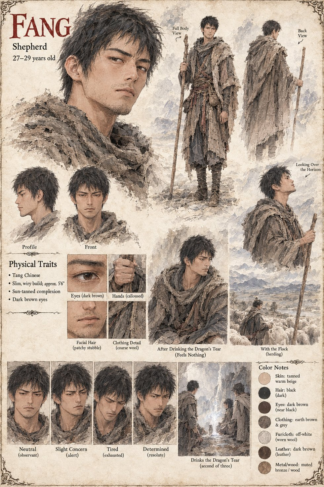

Fang
Shepherd · Chen Wu's cousin · 27–29 by his sheet
Chen Wu's cousin, one of the three shepherds who reach the grazing bank four days after Kuang Zhi has died on the screened northern bank. He drinks second and feels nothing; Bai Rong drinks after him.
The manuscript names him only that once. His sheet carries the rest: a slim, wiry man with patchy stubble and a coarse wool cloak, shown drinking from the pool as the second of three, and given four moods from observant to resolute. Its age and every other detail are its own.